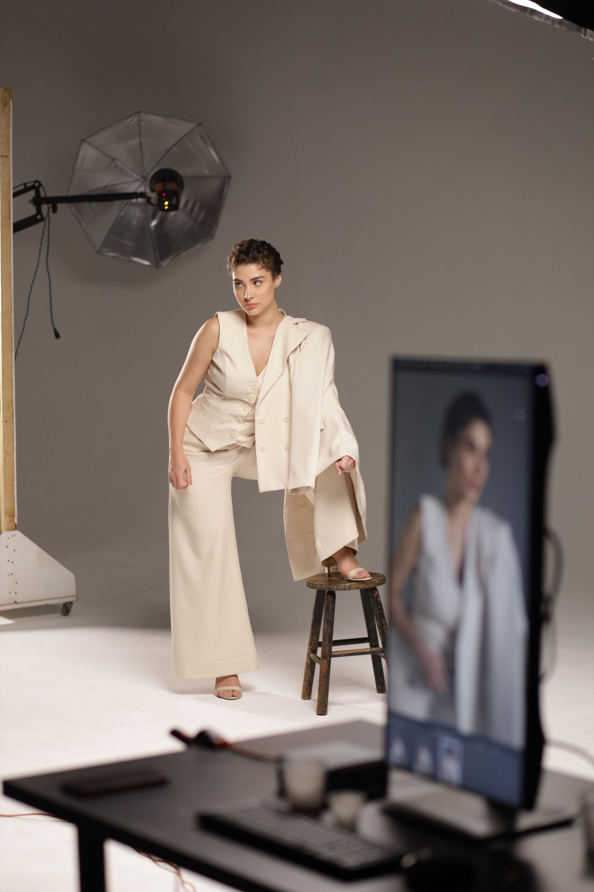
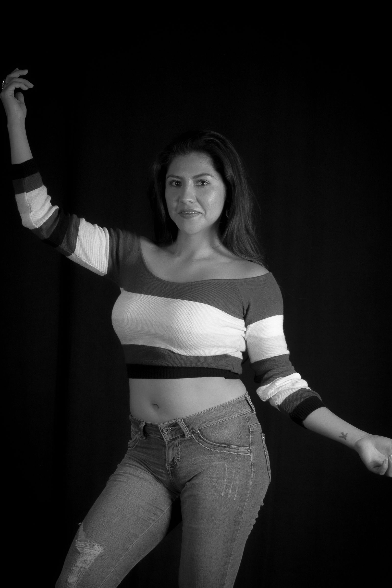

The Column Coat
$420Warm sand

Quiet confidence.
Uncompromising expression.

Selected pieces
Warm sand
Ink black
Stone
Soft ivory
A considered wardrobe
A conversation between structure and softness. Pieces that hold their own, and work beautifully together.
View selected piecesNotes from the atelier
Why we begin every collection with the things you can touch. Natural fibers, honest texture and a little unexpected softness.
Before a sketch, there is a swatch. Our process starts with how a fabric falls, moves and feels against the skin.
For Collection 06, we explored dry wool, fine cotton and fluid viscose. Each was chosen for a quiet quality that gets better with wear. The result is a wardrobe defined as much by feeling as by form.
Designing for the way we live, and the people we become. On choosing well and wearing something your own way.
We are interested in pieces that become part of your life. A coat that feels like an old friend. A shirt that works on a Tuesday and feels right on a Sunday.
Our silhouettes return, evolve and speak to one another across collections. Wear them together, or let them join what you already love.
Atelier Noir is an independent design house built around a simple idea: the most interesting thing about a piece of clothing is the person who wears it.